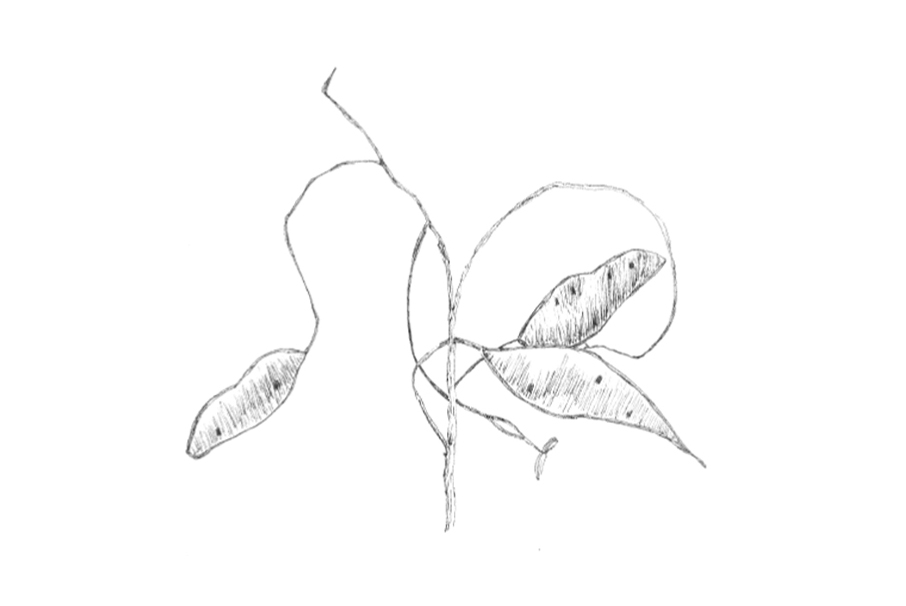

Maud Canisius
About
Contact
Sketches
A selection of environment-sketches I made throughout the years throughout my tracels
Documentation
Cospunder See - Germany
Willemstad - Curacao
Cebu - Philippines
Freetown - Sierra Leone
Lake Tahoe - USA
Ventspils - Latvia
Sint Geertruid - the Netherlands
Samso - Denmark
Stryck - Germany
